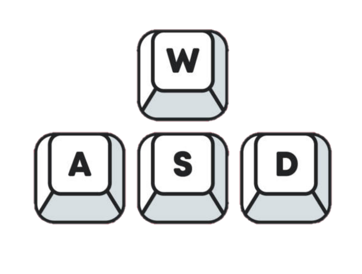
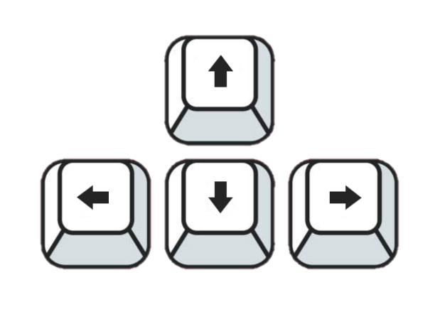

Bem vindo ao seu Nexus!
Veja seu futuro na sua frente
Siga as próximas etapas ou pule as ilustrações para inciar sua expreiência.
Use as teclas ilustradas abaixo para movimentar-se dentro do ambiente.


Use o mouse para rotacionar sua visão, conforme ilustrado abaixo.